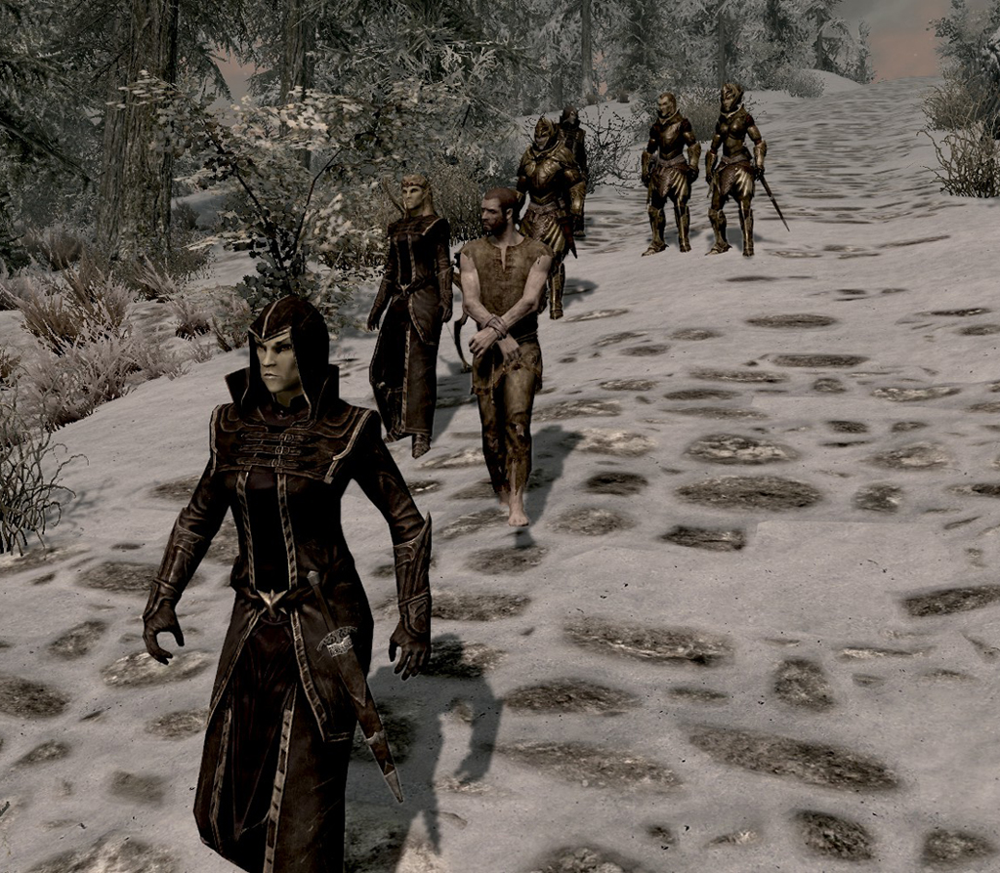
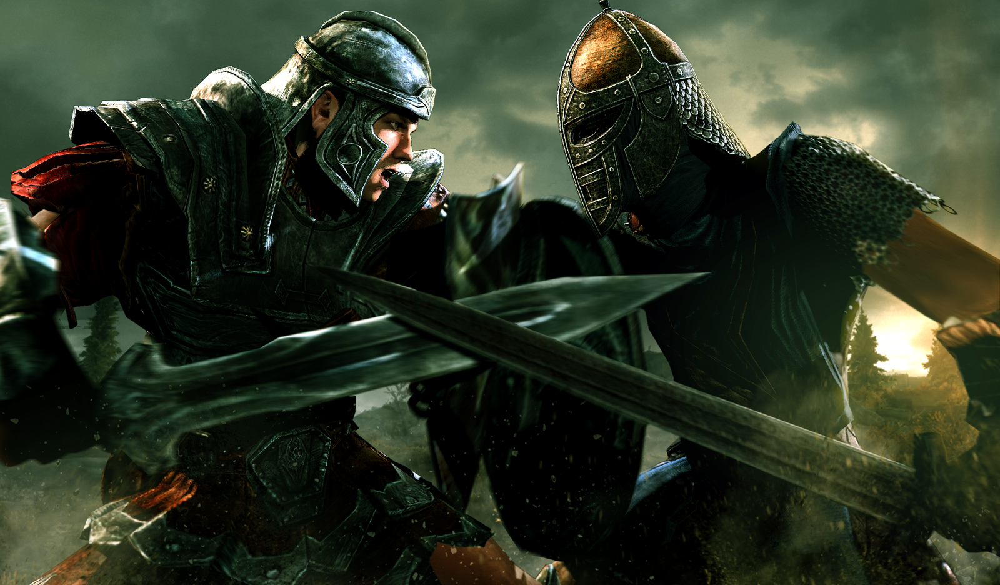

Hem
Hate in Skyrim:
Why the Nords hate all things elven and vice versa
- The sacking of Sargoth
- Ysgramors return with the 500 companions slaying any elf on the surface
- The Elvs blaspemus treatment of Talos
- The Thousends of abdutions made by the Thalmor Justicars

Why the Stormcloaks hate the Empire and vice versa
- THE WHITE GOLD CONCORDAT
- THE WHITE GOLD CONCORDAT
- THE WHITE GOLD CONCORDAT
- THE WHITE GOLD CONCORDAT
